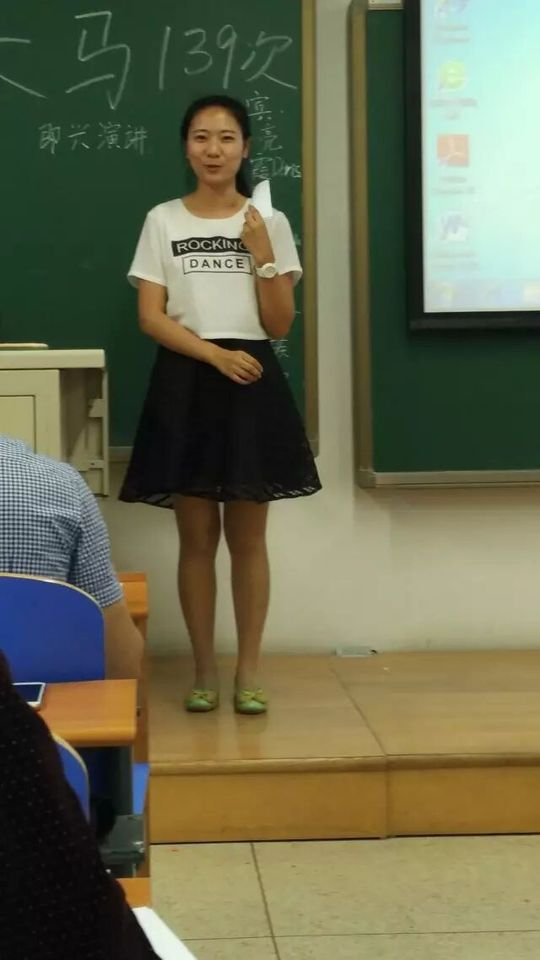
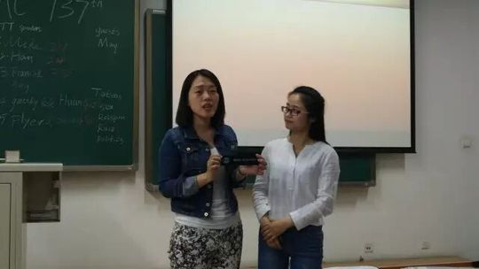
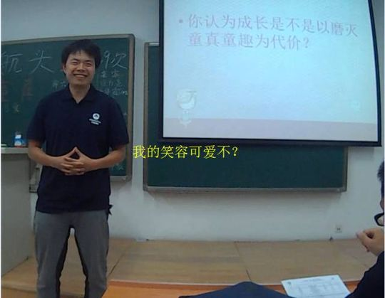
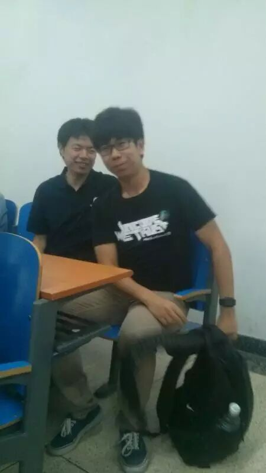
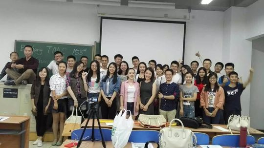

Huanhuan
从台上略显羞涩到拿下中文比赛第一的活力女孩，俱乐部里热情的"颜值与即兴主持担当"。
会员活跃 2016–2017出现 7 次 · 7 篇2 场演讲
欢欢与北航头马的故事开始于2016年春天。在第137次会议（2016年5月）的即兴演讲环节，她第一次走上头马舞台，面对主持人 Gastby 的提问显得有些羞涩、没怎么开口——那是很多新人都有的紧张瞬间。但她没有止步于此，很快从听众席走到了聚光灯下。
进入2016年下半年，她带来了自己的备稿演讲《My pets》（第153次会议），用喜欢养宠物的女孩视角分享生活的可爱一面，逐渐成为会议里熟悉的面孔。她身上有种天然的亲和与活力，纪要里常被叫作"美丽主持人""颜值担当"，在第139次"童真"中文会议上担纲主持，把现场气氛带得轻松又温暖。
2017年是欢欢最高光的一段时期。她接连在第170、173、175次会议担任即兴主持（Table Topics Master / Toastmaster），从《Spring》到《Ode to Joy》，每次都为大家精心准备贴合主题的讨论问题。而真正让人记住她的，是2017年3月的春季中文演讲比赛：她以生活中普遍存在的"双标"现象为题，结合自己的亲身经历，告诫大家不要随波逐流地"双标"——这场准备充分、言之有物的演讲赢得了"她应该获得第一名"的评价。
从初登台的羞涩，到独当一面的即兴主持，再到比赛夺魁，欢欢用一年多的时间走出了一条扎实而动人的成长轨迹。她热情、爱笑、用心，是那种能把会议气氛点亮、也能把演讲打磨认真的头马人。
里程碑
- 2016-05-17 初登头马舞台 ↗第137次会议即兴环节首次上台，第一次略显羞涩。
- 2016-09-28 备稿演讲 My pets ↗第153次会议带来CC备稿演讲，分享养宠物的生活。
- 2017-03-17 中文比赛高光 ↗第166次春季中文演讲比赛以双标为题，被评应得第一名。
- 2017-06-01 担任即兴主持 ↗第175次Ode to Joy会议担任Table Topics Master，主持主题讨论。
做过的演讲 · 2 场
以喜欢养宠物的女孩视角分享生活，是她较早的一次备稿演讲。
借生活中普遍存在的双标现象与亲身经历，告诫大家不要从众双标，准备充分获评应得第一名。
担任过的会议角色
即兴主持 Table Topics Master×3Toastmaster 主持×2备稿演讲者中文比赛参赛者
为俱乐部做的事
- 多次担任即兴主持（Table Topics Master / Toastmaster），为Spring、Ode to Joy等主题会议设计讨论问题，带动现场气氛
- 在中文会议中担任主持人，以亲和热情的风格活跃会议
- 以备稿演讲《My pets》参与俱乐部演讲训练
- 参加春季中文演讲比赛，以双标为题贡献了一场准备充分、引人思考的演讲
照片墙 · 时间线
共 20 帧，其中 6 帧已用人脸识别确认是本人（带 ✓）。

✓ ✓
✓ ✓
✓ ✓
✓ ✓
✓ ✓
✓










完整足迹 · 7 次出现（点开，每条可跳转原文）
- 2016-05-17第137次 · 首次上台即兴演讲略显羞涩
- 2016-05-30第139次 · 担任会议主持(花絮)
- 2016-09-28第153次 · 做备稿演讲《My pets》
- 2017-03-17第166次 · 中文演讲讲双标现象，应获第一名
- 2017-04-13第170次 · 担任Table Topics Master,主持Spring话题
- 2017-05-12第173次 · 担任会议主持人(Toastmaster)
- 2017-06-01第175次 · 担任Table Topics Master,主持欢乐颂话题
“喜欢养宠物的女孩子最美了，你看我美么？”